When Latents Forget Pixels: Restoring Fidelity in Diffusion Transformer Super-Resolution
Dartmouth College
NeurIPS 2026 · Poster
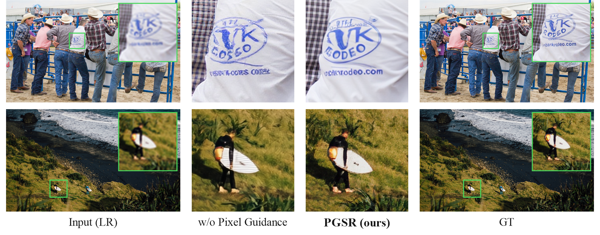
Abstract
Image super-resolution (SR) with large generative models has recently achieved remarkable perceptual quality, yet maintaining fidelity to the LR observation remains challenging. In particular, we observe that diffusion transformers (DiTs) built on latent representations suffer from a critical limitation: the compression bottleneck of the VAE weakens fine-grained spatial information, leading to hallucinated details that are weakly grounded in the input image. In this work, we revisit generative SR from a representation perspective and propose a pixel-grounded super-resolution (PGSR) framework that preserves LR-observed pixel evidence before VAE compression and reuses it throughout restoration. Instead of relying solely on the compressed latent condition, PGSR extracts pre-VAE pixel evidence from the upsampled LR image and reuses it at two stages. First, Condition-Side Trajectory Guidance fuses LR-derived pixel evidence with the latent LR condition to guide the latent restoration trajectory. Second, Decoder-Side Pixel Grounding injects multi-scale pixel features into the frozen VAE decoder to ground the final rendering with LR-observed cues. To efficiently adapt large pretrained DiT models, we keep the latent autoencoder and main flow-matching backbone frozen, and train only lightweight restoration modules. We further study an efficient local-window attention variant for improved high-resolution efficiency and scalability. Extensive experiments demonstrate that PGSR improves the realism–fidelity trade-off and produces more faithful, visually convincing results than existing latent generative SR approaches.
Method

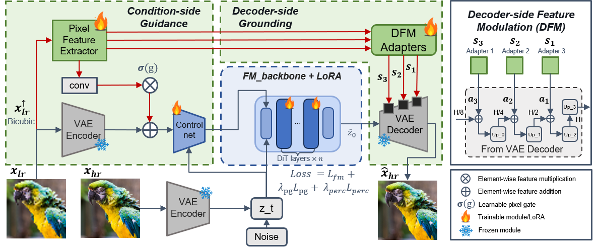
The LR observation is first aligned to the HR grid and encoded into a latent condition. PGSR introduces pixel-grounded evidence at two complementary locations: Condition-Side Trajectory Guidance fuses LR-derived pixel evidence with the latent condition to anchor the flow-matching trajectory, while Decoder-Side Pixel Grounding injects multi-scale pixel features into the frozen VAE decoder for faithful rendering.
High-resolution Results
Drag to compare: LR (left) and PGSR (right).
Carved stone
DIV8K · 04924× SR · 1680 × 1296 → 6720 × 5184
Window tracery
DIV8K · 04674× SR · 1680 × 1584 → 6720 × 6336
Aligned crops from actual LR/PGSR pairs. LR is bicubic-enlarged for display. Use the divider or arrow keys to compare.

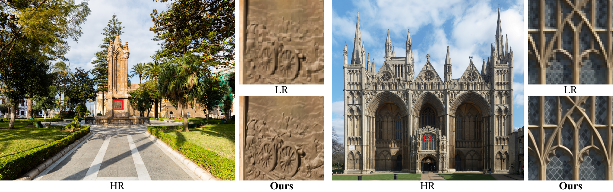
Qualitative Comparisons
Results from the paper and supplementary material. Click a figure to enlarge.
DIV2K-Val · Synthetic degradation
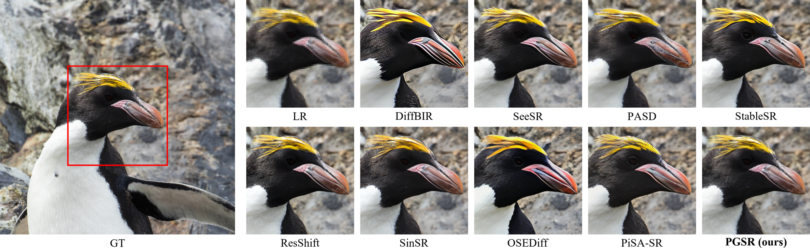
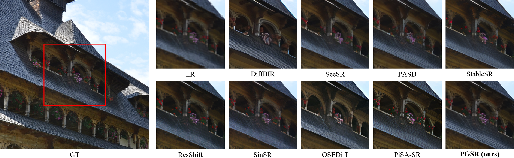
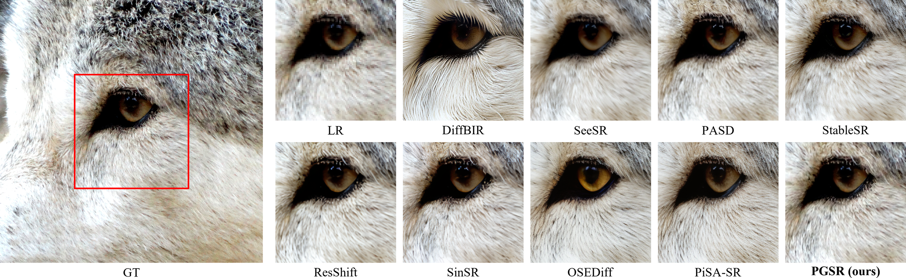
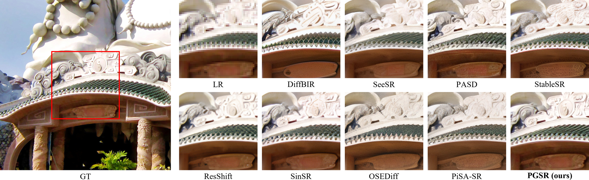
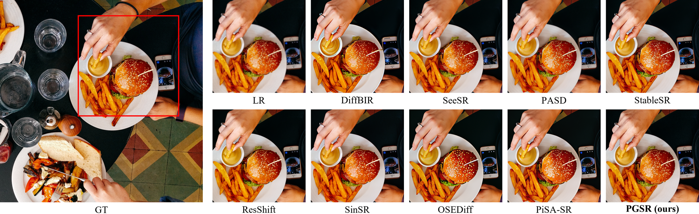
RealSR · Real captured degradation
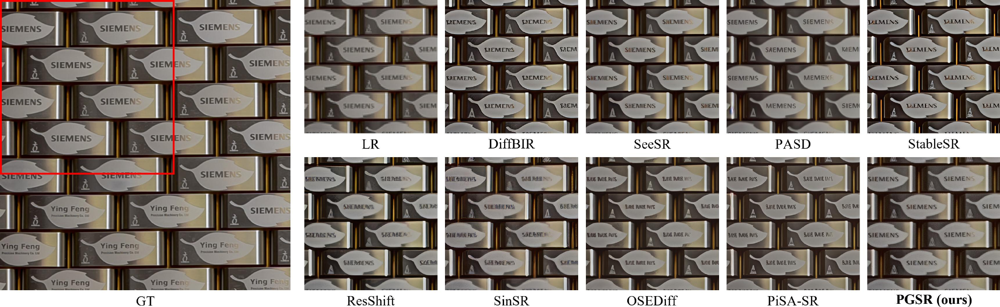
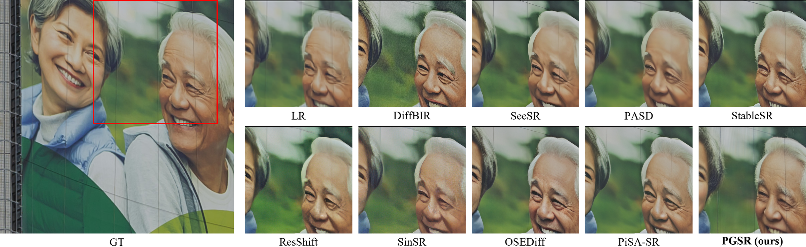
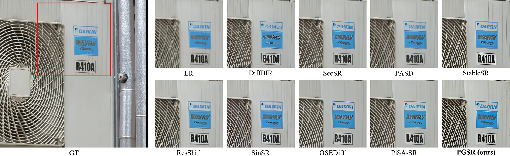
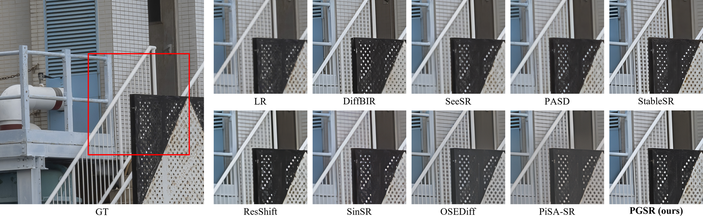
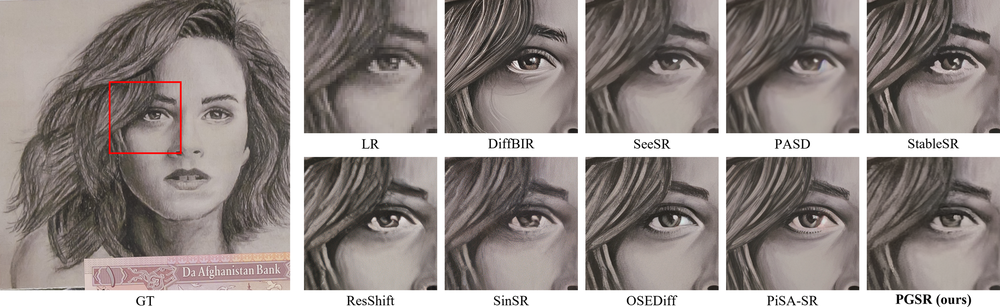
Citation
@inproceedings{shi2026latents,
title={When Latents Forget Pixels: Restoring Fidelity in Diffusion Transformer Super-Resolution},
author={Shi, Yu and Zhang, Yuyao and Tai, Yu-Wing},
booktitle={Advances in Neural Information Processing Systems},
year={2026}
}